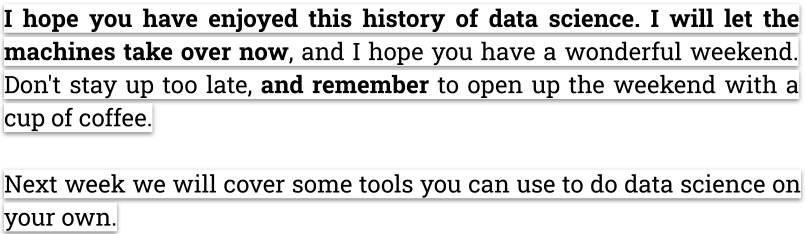

Intelligence vs. Artificial Intelligence vs. Machine Learning
What makes modern AI systems different from those in past decades (their "ancestors")?
Without a doubt, research and better computational/mathematical
techniques, but especially...
Larger and more complex networks of (mathematical) neurons.
Perhaps we will eventually be able to reduce the size of these
models while retaining performance. As it stands now, scale is one
of the most important ingredients. Data centers are huge and their energy
requirements are on the scale of small cities.

From a course I taught in 2019. Using a GPT-2 like model, I entered the text in bold, it filled in the rest. Groundbreaking at the time, it was basically a fancy autocomplete tool that would go off the rails after a few paragraphs.